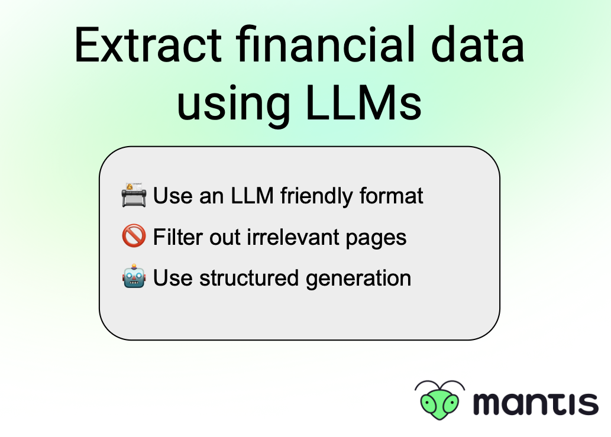

Extract financial data
💵 Extract financial data using LLMs
Extracting structured information from documents written for humans is maybe the most established use case for text AI. Small models excel in this, so you can find many pretrained models to extract all kind of information as well as train your own quite efficiently 🚀
That said -in the absence of a pretrained model you can still utilise LLMs to kick off the extraction before training a smaller model that will be more performant and cost-efficient 💰 Here are steps to get you started:
📇 Convert documents into an LLM-friendly format like markdown instead of HTML or XML
🚫 Filter out irrelevant pages with a simple zero shot classifier
🤖 Use regular expressions and structured generation to output the format you want
🔗 Here is an example for financial data extraction by .txt: https://blog.dottxt.co/extracting-financial-data.html
